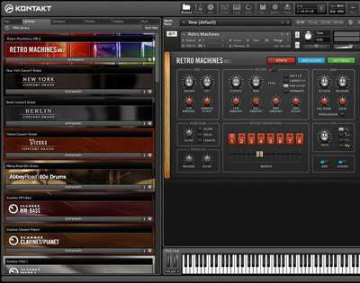
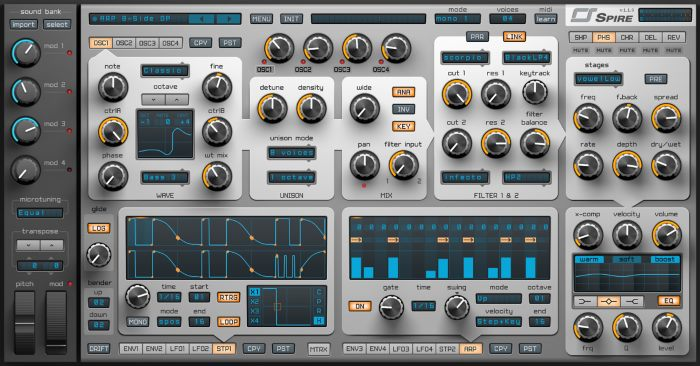
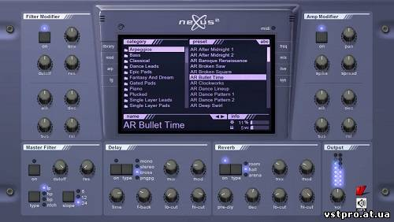

Лучшие VST-плагины для FL Studio
VST-плагины являются общей чертой в мире музыки и стали неотъемлемой частью производства музыки. Независимо от того, на каком вы уровне, профессиональном или любительском, вы, скорее всего, в тот или иной момент полагались на VST-плагины при работе с музыкой. За эти годы многочисленные разработчики создали несколько потрясающих плагинов с функциями, которые помогли облегчить процесс создания музыки.

Семплирование, то есть использование отрезков готовых композиций или отдельных звуков при написании новых, встречается в любых музыкальных стилях. Логично, что и этот список открывает мощный семплер, равных которому нет среди железных аналогов. В сердце Kontakt 6 бьется мощный звуковой движок с передовой модульной архитектурой, пригодной как для воспроизведения первоклассных комплектных семплов, так и для создания персонального аудиокаталога во встроенном редакторе. Продукт Native Instruments содержит гигантскую заводскую библиотеку с 55 Гб детализированных и выразительных семплов более 1000 инструментов. Материал можно редактировать, обрабатывать интегрированными эффектами модуляции, варьировать и настраивать по собственному усмотрению.

Spire — дебютный и пока что единственный программный полифонический синтезатор от команды музыкантов и программистов Reveal Sound. Методы, примененные в Spire, правильнее всего отнести к субтрактивным, поскольку доступные параметры сложнее, чем у большинства реальных аналоговых устройств и скорее являются гибридом волно-табличного синтеза и волновых огибающих. Звуковые возможности раскрывает четверка многомодовых полиморфных осцилляторов, каждый из которых способен функционировать в семи режимах. Их сигнал направляется на блок модуляции, состоящий из четырех огибающих, четырех НЧ-генераторов, двух степ-секвенсоров и матрицы маршрутизации. Секция эффектов, компрессор и эквалайзер прилагаются. Spire прекрасно справляется с созданием лид и басовых партий для танцевальной электроники, а фанаты олдскульного транса оценят режим унисон, добавляющий каждому осциллятору девять голосов.

Первый билд Nexus вышел в 2007 году и сразу нашел одобрение среди продюсеров, искавших производительный ромплер. Тогда же reFX встала на путь регулярных обновлений, улучшений и расширений. Версия Nexus под порядковым номером 3 готова похвастать полностью переработанным минималистичным дизайном интерфейса. Навигация по гигантской библиотеке на 160 Гб разворачивается в трех столбцах по центру рабочей области плагина, а для поиска можно вводить теги и названия в соответствующем окне. Есть визуализация сигнальной цепи, арпеджиатор работает с паттернами длиной до 256 шагов, а интуитивно понятный секвенсор, напоминающий Piano Roll из FL Studio, позволяет легко писать сложные мелодии. Особенно стоит отметить усилия reFX по оптимизации кода. В отличие от многих VST-плагинов, которые буквально сжирают вычислительные мощности компьютеров, Nexus обходится с центральным процессором весьма бережно.